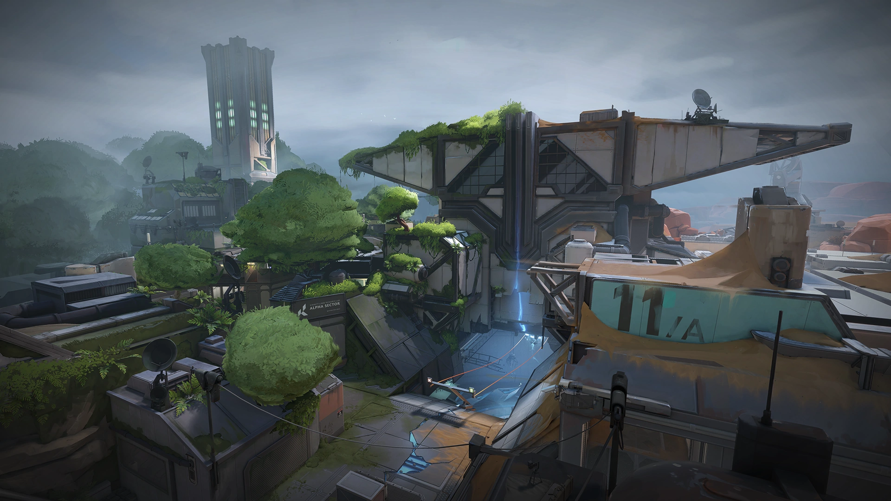

Each match of VALORANT takes place on a map. Maps feature a spawn area for each team, barriers that limit accessible areas during the Buy Phase, and objective sites where the spike is to be planted. Four maps were available at launch, and a six-month cycle is expected for the release of new maps. There are currently seven playable maps in VALORANT, with an additional one for practice and training new players.
List of Maps
Fracture
Fracture (codenamed Canyon) is the seventh map to be released in VALORANT.
Location: Santa Fe, New Mexico, USA
Summary
"A top secret research facility split apart by a failed radianite experiment. With defender options as divided as the map, the choice is yours: meet the attackers on their own turf or batten down the hatches to weather the assault." Fracture is a top-secret experiment site split apart by a radianite-fueled disaster. In its simplest form, the map is marked by its H-shape layout with a visual split down the middle that reveals contrasting sides. Long ziplines also connect routes underneath. Like previous maps, keep an eye out for heavy tie-ins to VALORANT lore, including first-time interactive narrative objects.
Map Features
Fracture's unique design splits up the map into four neutral quadrants, four central areas between the quadrants that contain the sites and Attacker spawns, and a central zone where Defenders spawn. On Round Start, Defenders can access the sites, which are on opposite sides of the map. Attackers all spawn in one area, but can reach the other side by using the cross-map ziplines that take them underneath Defender Spawn. During the Buy Phase, Defenders are unable to hear Attackers using the ziplines. Each quadrant contains one orb, meaning Fracture has a total of four orbs as opposed to the usual total of two orbs that are present on most other maps. A Hall contains an automatic door that works similarly to the exit room doors for Bind's teleporters, as it will instantly open once a player gets close enough, making a loud audio cue as it does, and will also open for any abilities thrown towards it. This door on Fracture however will also open for entities on both sides of the door.
Ziplines
Fracture features two parallel one-way ziplines that bisect the map. These ziplines do not act like ziplines found on other maps, and have special rules to their interactions:
Additional article: Fracture/Lore
Whilst previous maps have had temporary interactive features and visual updates to show how the map relates to the story of VALORANT and the events that happened in these locations, Fracture is the first to have dedicated per-patch updates for its lore. These are interactive elements that can be found as yellow dots during the Buy Phase, and appear in both spawn areas
Breeze

Breeze (codenamed Foxtrot) is the sixth map to be released in VALORANT.
Location: Bermuda Triangle, Atlantic Ocean
Setting
Take in the sights of historic ruins or seaside caves on this tropical paradise. But bring some cover. You'll need them for the wide open spaces and long range engagements. Watch your flanks and this will be a Breeze.
Map Features
Breeze's 'unique' features are present on the A side of the map, mostly to do with A Hall. There are ropes to get players into A Hall. On the defending side players can use the rope at the back of A Site to get onto Bridge and into Hall, and on the attacking side players can use the rope in A Lobby to get into Hall. A Site has an impenetrable, indestructible mechanical door leading into A Hall that can be opened and closed using switches on either side. The door is closed at the start of each round. Towards the Attacker side of Hall is a one-way chute (known as a 'vent') that can be used to go to Mid.
Icebox

Icebox (codenamed Port) is the fifth map to be released in VALORANT.
Location:  Bennett Island, Russia
Bennett Island, Russia
Summary
"Your next battleground is a secret Kingdom excavation site overtaken by the arctic. The two plant sites protected by snow and metal require some horizontal finesse. Take advantage of the ziplines and they’ll never see you coming."
Map Features
Icebox is the first map to introduce horizontal ziplines, seen at the A Site. Each Icebox site is a complex combat space that features plenty of cover and verticality. This map emphasizes skirmishes, sharp aim, and adaptive play. It is also the first map where the plant site has different levels of elevation. Both sites contain nests that players can get into using ropes and then plant the spike on the nest floor.
Bind

Bind (codename Duality) is a launch map in VALORANT.
Location: Rabat, Morocco
Summary
"Two sites. No middle. Gotta pick left or right. What’s it going to be then? Both offer direct paths for attackers and a pair of one-way teleporters make it easier to flank."
Map Features
Bind's 'unique' feature is that it doesn't contain a mid section, instead having two one-way teleporters. One takes players from A Short to B Short and the other takes players from B Long to A Lobby. Players use teleporters by walking into the section of wall taken up by the teleport entrance. They will then instantly arrive in a small exit room which players leave by walking towards the door out of the room. This door is closed by default and can only be opened by players inside the exit room walking up to it, at which point they will open automatically. Players outside the exit room cannot open these doors, but they can be penetrated by gunfire. Other objects can also be sent through teleporters if they come into contact with the teleporter entrance. They will maintain any velocity they had before being teleported and can open the doors and leave the exit room should they travel far enough to trigger the door sensor. Objects include abilities, the spike, and dropped weapons. Whenever a teleporter is used by an agent or an object, all players on the map will be given an audio cue.
Haven

Haven (codename Triad) is a launch map in VALORANT.
Location: Thimphu, Bhutan
Summary
"Beneath a forgotten monastery, a clamour emerges from rival Agents clashing to control three sites. There’s more territory to control, but defenders can use the extra real estate for aggressive pushes."
Map Features
Haven's unique feature is that it has an additional third spike site. This does not affect the number of ultimate orbs on the map; Haven's two ultimate orbs are present in A Long and C Long (Dragon).
Split

Split (codename Bonsai) is a launch map in VALORANT.
Location: Tokyo, Japan
Summary
"If you want to go far, you’ll have to go up. A pair of sites split by an elevated center allows for rapid movement using two rope ascenders. Each site is built with a looming tower vital for control. Remember to watch above before it all blows sky-high."
Map Features
Split was the first map to use ascenders. There are three sets on the map:
- Two that allow players to get up from Sewer to A Lobby
- One that allows players to get up from B Hell to B Tower
- Four that allow players to navigate through Vents
Ascent

Ascent is a launch map that was also the fourth map to be released in VALORANT.
Location: Venice, Italy
Summary
"An open playground for small wars of position and attrition divide two sites on Ascent. Each site can be fortified by irreversible bomb doors; once they’re down, you’ll have to destroy them or find another way. Yield as little territory as possible."
Map Features
Ascent is a map set in Italy that features a large, open middle area that both teams can skirmish over. Mid is a playground for diverse ability use and successfully controlling the area opens additional routes for Attackers to both Spike sites. The map's 'unique' feature is mechanical doors leading into sites. Each site has one door (A Link for A and Market for B) that is opened at the start of each round. Players can use a switch on the site side of the door (Next to the door on A and on a table in Toolshed on B) to close or open the door. These doors are impenetrable while closed, but players can damage the doors to eventually destroy them, leaving the doorway permanently open.
Other maps
The Range (Practice Map)

Range is a practice map in VALORANT.
Location: Venice, Italy
Summary
The Range is a practice map where players can test their skills with the parkour trial event, test different abilities on every Agent and try out different types of weapons.
Parkour
To test your parkour, strafing and hopping skills in VALORANT, the developers created a challenging trial course which you can take part in ending at the top of the tower. You have to make your way jumping on small ledges, strafing in mid-air around corners until to make it to the top of the tower. Note: To play the parkour trial even you will need to play on the 'Open Range' game mode so that you can freely move around.
Tips
Hand-prints mean that you have to walk around the corners and foot-prints lead the way you need to go.